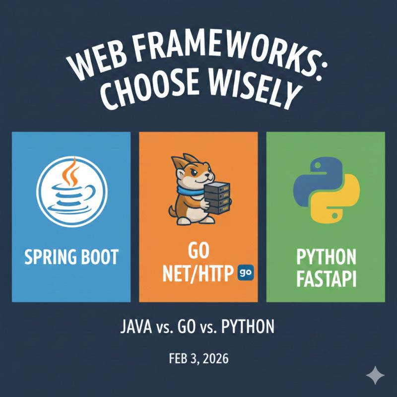

Why I Chose Spring Boot for My Regulatory Reporting Automation System (Personal Project)
When you’re building software that financial institutions rely on for regulatory compliance, technology choices stop being academic they become risk decisions.
Before writing any code for my regulatory reporting automation system, I defined the real constraints:
- Scheduled regulatory reports (biweekly, monthly, annual)
- High-volume financial data processing
- Strong transactional integrity
- Consistent performance and uptime during reporting windows
With PostgreSQL already selected, I evaluated three backend options:
- Go
- Python
- Java (Spring Boot)
Each had strengths, but the goal wasn’t just performance it was reliability, maintainability, and suitability for regulated environments.
Evaluating the Options
Go
Go offered excellent speed and concurrency characteristics but required building much of the surrounding enterprise infrastructure manually.
Python
Python provided strong data-processing tooling but introduced additional complexity for CPU-bound workloads at scale.
Spring Boot
Spring Boot stood out because it aligned naturally with the problem domain.
- Spring Batch supports scheduled, high-volume processing as a first-class concern
- Transaction management with PostgreSQL is mature and widely used in financial systems
- JVM performance remains stable under sustained load
- Strong typing helps catch issues early when working with financial data
Most importantly, the ecosystem supports long-term maintainability. The architecture follows well-established enterprise patterns, making it easier to evolve the system and onboard new engineers over time.
Alignment with Regulatory Environments
The architecture reflects regulatory standards commonly applied by central banking authorities in the region, including the Central Bank of Lesotho.
Designing with these expectations in mind helps ensure that the system prioritises reproducibility, transparency, and operational reliability from the start.
The Takeaway
Choosing a tech stack is ultimately about understanding risk, scale, and longevity.
For a regulatory reporting system operating in a banking context, Spring Boot offered the best balance between performance, reliability, and maintainability and that clarity made the decision straightforward.